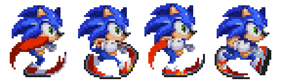

Game development with JS and Phaser
@ladybenko
Why make games in JS?
Because we can :)
Phaser

- Highly popular game framework
- Excellent documentation and lots of code examples
- High-level features: scenes, tile maps, physics, etc.
- phaser.io
A game in a weekend
Slides & examples
belen-albeza.github.io/betabeers-jan-2016
Press start button
What do we need to make a game?
The game loop

Init Phaser
- Phaser can create a WebGL or 2D
canvas - We need to pass callbacks for the game loop
var loop = {
preload: function () {},
create: function () {},
update: function () {},
render: function () {}
};
window.onload = function () {
new Phaser.Game(640, 480, Phaser.WEBGL, 'wrapper', loop);
};
Images and sprites
Draw images
- Load the asset and assign a key to it
- Create an image object and add it to the game
function preload () {
this.game.load.image('background',
'../assets/images/trees.png');
}
function create () {
this.game.add.image(0, 0, 'background');
}
Sprites

Sprites
- Image-based game entities
- Usually animated
- Drawing properties: coordinates, transparency, rotation, etc.
- Created or destroyed "on the fly"
- Can interact with each other
Use Phaser.Sprite
var ship = new Phaser.Sprite(this.game, 10, 20, 'hero');or use game's factory
var ship = this.game.add.sprite(10, 20, 'hero');
ship.anchor.setTo(0.5, 0.5);
ship.angle = 45;
ship.alpha = 0.5;
Animations
- The originalTM CSS sprites!
- Sprites pick the correct frame depending on time
function preload() {
this.game.load.spritesheet('hero',
'character.png', 122, 256);
};
function create() {
var hero = this.game.add.sprite(320, 240, 'hero');
hero.animations.add('walk');
hero.animations.play('walk', 5, true);
}
Move sprites (old-school)
- We need to update the position in each frame
- Newton's equations FTW
- We need the delta time
var SHIP_SPEED = 100; // pixels / second
function update() {
// time in seconds
var delta = this.game.time.elapsed / 1000.0;
// position = speed * time
ship.x += SHIP_SPEED * delta;
}
The game tree

The game tree
- Tree structure to store game entities
- Use groups to hold related entities together
- Entities can contain children
- Automatically calls
updateandrender
Create & destroy sprites
Add and remove them from the tree
PROBLEM: it's expensive!
Recycle sprites
- Don't destroy sprites… mark them as "zombies"
- Re-use "zombie" sprites instead of
new - Easy to implement with
Phaser.Group
Input, audio & text
Input
- HTML5 support for keyboard, mouse, touch and gamepad events.
- We might need to capture keys to avoid bubbling
function create() {
// capture spacebar key
spacebar = game.input.keyboard.addKey(
Phaser.Keyboard.SPACEBAR);
game.input.keyboard.addKeyCapture(
[Phaser.Keyboard.SPACEBAR]);
// register event callback
spacebar.onDown.add(shoot);
}
// check key flag
function update() {
if (spacebar.isDown) {
shoot();
}
}
Audio
- We can load and play sound effects and song tracks
- Formats? Same as
<audio> - Similar to handling images
- Can play track slices, control panning, etc.
// within preload
game.load.audio('shoot', 'laser.wav');
// within create
sfxShoot = game.add.audio('shoot');
// anywhere
sfxShoot.play();
Text
- They are a game entity
- Same API as
Pixi - Use CSS fonts or bitmap fonts
title = game.add.text(0, 0, 'Score', {
font: '20px monospace',
fill: '#f00'
});
title.setText('Score: ' + score);
Physics and collisions
Collisions with b-boxes

- Very fast, not accurate
- Phaser has built-in functions to check for rect and circle overlaps
Physics engines
- Mapping between game entities and a physical world
- Mass, speed, acceleration, bounding, etc. implemented by smart people. And free!
- Phaser's buil-in engines:
ArcadeandP2
Physics engines

- Easy, intuitive API…
- …but hard to fine-tune!
The rest
The golden rule about game dev
If you can fake it, then fake it.
You should also look into
- Game states
- Tiled maps
- Finite state machines
- Scripting
Examples for this talk
Links
- Phaser's forum
- Ludum Dare (48h game jam)
- One game a month (article)
- Gamasutra